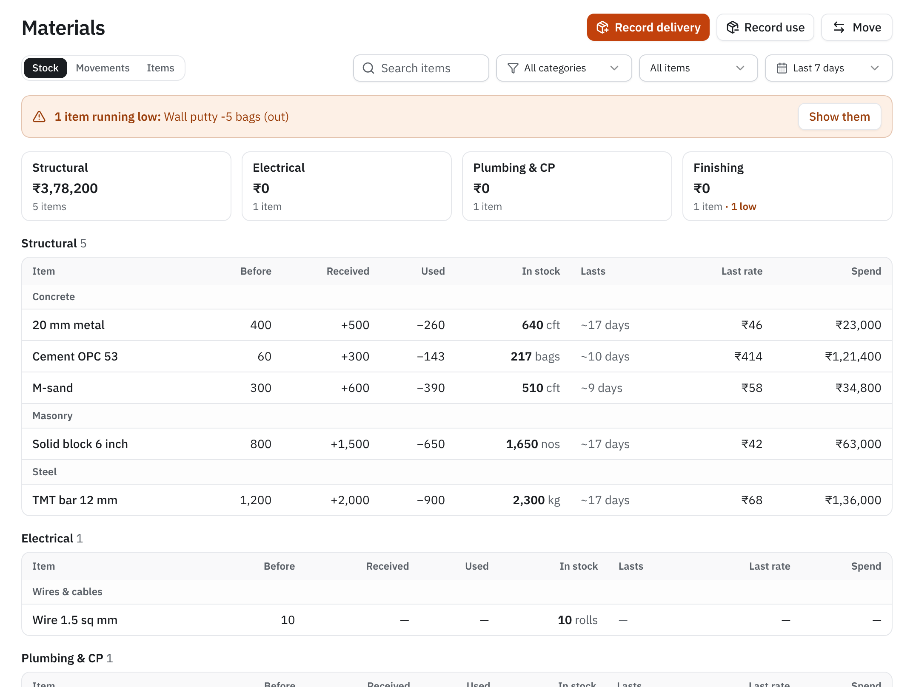
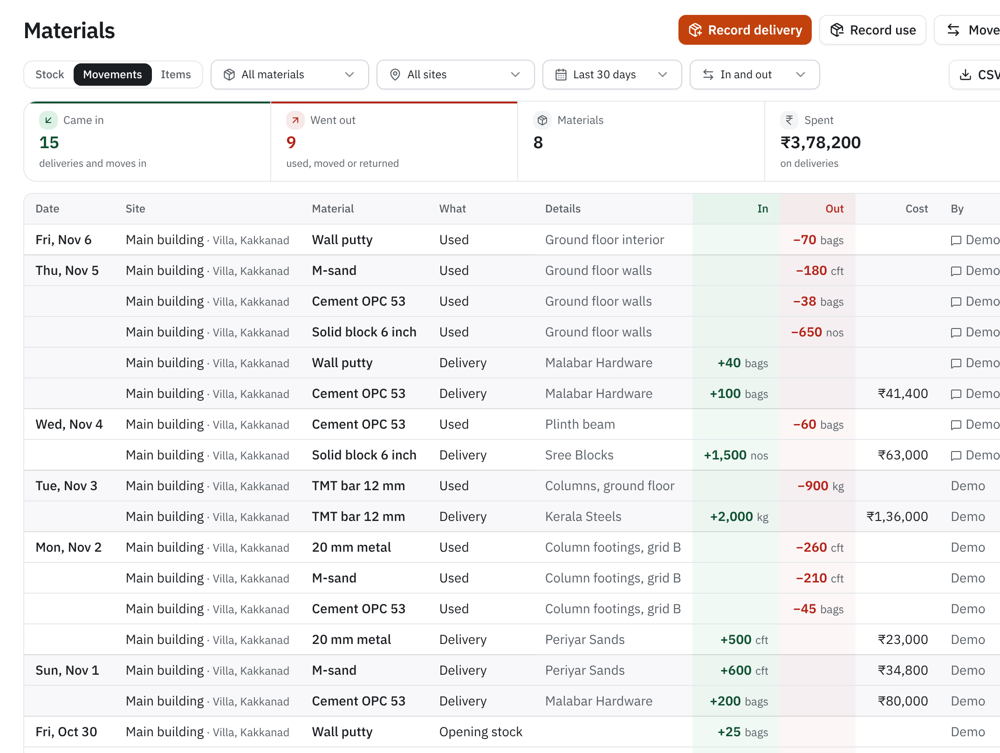
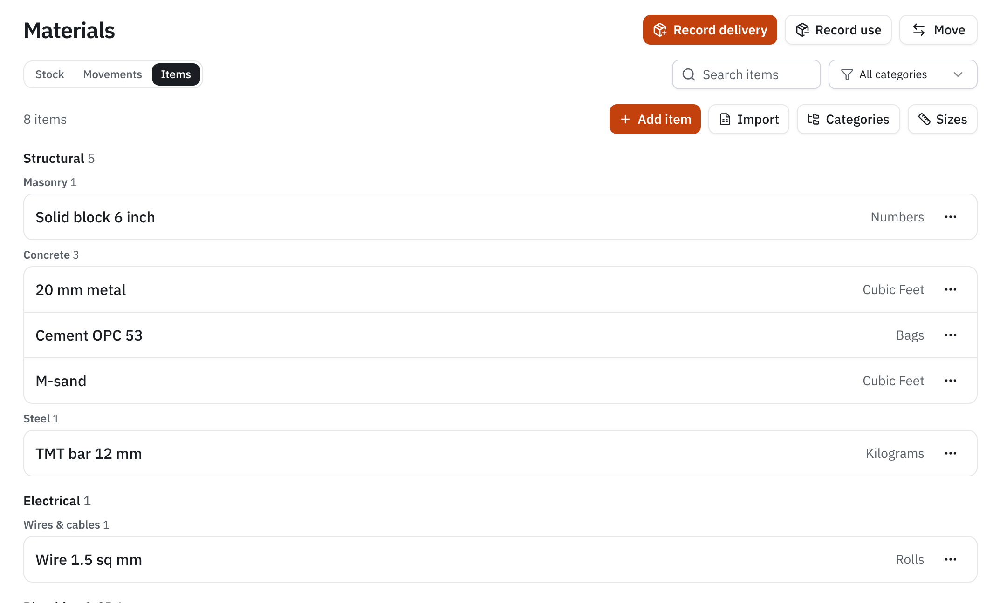
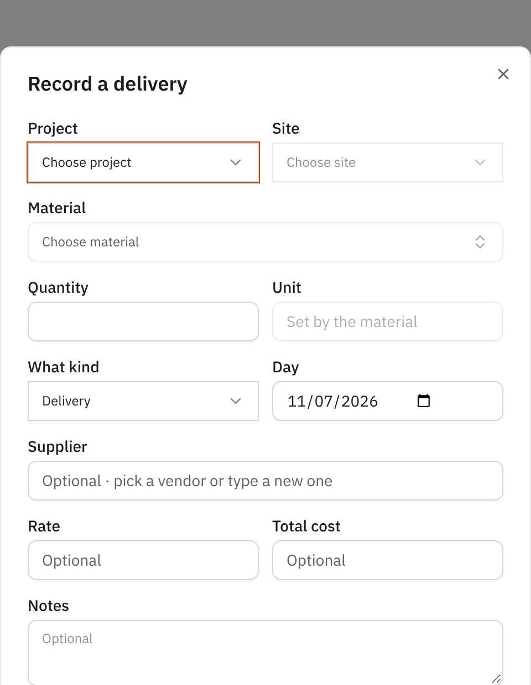
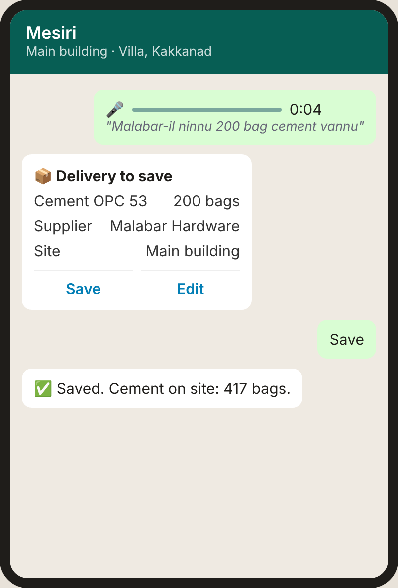

Field Guide · 03 of 13 · Internal team edition
What is on site, what came, what went into the work, and where the money disappears when nobody is counting.
In this guide
1 · The problem without it
"Near project closeout, you suddenly discover a shortage of 4 loads of metal. Reflected on paper, but missing on the ground. Accounts are tied to that: if money left, the material should be there." GM of a Kerala builder, sales meeting, 6 Nov 2026
Material is usually the biggest cost on a building site, bigger than labour. It arrives in many small loads, from many suppliers, to several sites, and is used a little every day by different teams. On most sites it is tracked in a paper register that reaches the office days later, if at all. These are the problems that follow:
| What goes wrong | What it looks like on site | Who feels it, and what it costs |
|---|---|---|
| Shortage found too late | The slab is planned for Friday; on Thursday evening the engineer finds 30 bags of cement left, not 130. | The team waits or the pour is moved. 6 people idle for a day is about ₹6,400 of wages for nothing, plus an urgent purchase at a worse rate. |
| Paid for, not on site | The bill says 4 loads of metal; the ground shows less. Short delivery, unloading at another site, or theft. | Accounts pays the full bill. Nobody can prove what arrived, so the loss is never recovered. |
| Used more than the estimate | Plastering uses 9 bags per 100 sq ft where the estimate said 7. Nobody compares. | The margin on the job shrinks quietly. The QS finds out at the end, when it can't be fixed. |
| Things you can't count | Sand and metal are dumped in a heap. Once dumped, nobody can count them. | Only "what came" and "what was used" can tell you what should be there. Without both, a heap is a guess. |
| Double orders and leftovers | Two engineers order cement the same morning. The electrician asks for 10 pipes, uses 6, the rest disappear. | Cash locked in extra stock; leftovers wasted or taken. |
| Moved between sites, not recorded | 20 bags taken to the Chennai site in the company's own lorry. | One site looks short, the other has extra that nobody knows about. |
| Price creep | Cement is ₹14 a bag dearer than last month from the same shop. | Nobody notices, because last month's rate is in a different notebook. |
| The office is blind | The MD calls the engineer to ask "how much steel is left?" | Every answer costs a phone call and is only as good as the engineer's memory. |
Not a digital copy of the paper register. The GM said it plainly: "Just noting down that metal arrived or cement arrived has no real benefit." What he wants is to know, while there is still time to act:
2 · The problems people hit while using it
Contractors have tried registers, Excel and apps before. Most stop using them. The reasons are almost always the same, and each one is a design rule for us.
| Why it fails | How Mesiri handles it |
|---|---|
| Too much typing on site. A storekeeper with dusty hands will not fill a 10-field form for every lorry. | A voice note or a line on WhatsApp ("200 bag cement vannu"). Mesiri prepares the entry; the person taps Save. Only material and quantity are required. |
| Units don't add up. Sand comes in loads, is used in cft or bags; steel in tons, used in bars. | Each item has one stock unit. Standard conversions are automatic (1 ton = 1000 kg, 1 brass = 100 cft, a cement bag = 50 kg). For a "load", Mesiri asks once, an admin answers ("1 load M-sand = 60 cft"), and it is used for everyone after. |
| The same item under five names. "M sand", "msand", "manal", "Msand 1st quality". | One item list per company with aliases. Mesiri never guesses a "near" material: if it's not on the list, it asks or adds it, it never saves cement as cement paint. |
| No opening stock. The site already had 60 bags when Mesiri started, so stock is wrong from day one. | Opening stock is its own entry type, and can be loaded from Excel at setup. |
| Only deliveries are recorded, never use. Stock only ever goes up. | Use is one line ("45 bag cement footing-nu"). Planned: comparing use with the BOQ will flag a site that reports deliveries but no use (CC-08). |
| Nobody trusts the numbers. Someone edited last week's entry; the total changed; no one knows why. | Nothing is edited silently. A correction is a new entry that reverses the old one, with who and why. Every number on Stock can be traced to its entries in Movements. |
| Price and bill are not known at the gate. | Supplier and rate are optional at delivery; they come later from the bill (planned: bill photo matched to the delivery, PRC-11). A missing price shows as "Not recorded", never as ₹0. |
| The office screen is confusing. Twenty columns, codes, menus. | Three tabs, each answering one question: Stock (what do we have), Movements (what happened), Items (what we use). |
3 · Who uses it, and when
| Who | When | Their question | Where they get it |
|---|---|---|---|
| Site engineer / supervisor | Daily, several times | "Record that cement came." "Is there enough sand for tomorrow?" | |
| Storekeeper | Every delivery | "Did the lorry bring what the challan says?" | |
| Project manager | Daily / weekly | "What is running low? Should I move stock from another site?" | WhatsApp, Stock tab |
| Purchase / accounts | Weekly | "What came from Malabar this month, at what rate? Is the bill right?" | Movements tab, Finance |
| Quantity surveyor (QS) | Weekly / monthly | "Does the cement used match the work done?" | Reconciliation (planned) |
| GM / MD | Weekly | "How much did we spend on materials? Any shortages coming?" | Stock tab, weekly report |
The site people should never need the dashboard. If an engineer has to open a laptop to record a delivery, we have already lost.
4 · One week on a real site
The numbers below are the demo company you will see in the screenshots.
5 · The pages, and how they look
Answers: what do we have on site right now, and how long will it last?

Stock tab, last 7 days, all projects. Demo data.
What must be on it, and why:
Answers: what happened, when, who reported it, and what was it for? This is the register, the record every Stock number comes from.

Movements tab, last 30 days. The chat icon marks entries sent on WhatsApp.
What must be on it: date, site, material, kind (delivery, use, move, opening stock, return), supplier or work, quantity in green or red, cost, who reported it and whether it came from WhatsApp; totals on top; Excel/CSV export for accounts; corrections shown as reversals, never as silent edits.
Answers: which materials do we use, in which category, counted in which unit?

Items tab: Structural › Concrete › Cement OPC 53, counted in bags.
What must be on it: item name and its other names (aliases), category and sub-category, stock unit, sizes ("1 load = 60 cft"), import from Excel. Set up once; mostly untouched after.
For the office. Site people use WhatsApp instead.
Only site, material and quantity are needed. Supplier, rate and notes are optional and can come later from the bill. The unit is set by the material, so nobody types "bag" five different ways. Record use asks what it was used for; Move takes it out of one site and into another as one record.

Answers: what does the site need, by when, and has anyone acted on it? Comes before a purchase order (Guide 04 Procurement).
| Needed by | Site | Material | Qty | For | Asked by | Status |
|---|---|---|---|---|---|---|
| Fri 13 Nov | Main building | Cement OPC 53 | 200 bags | First-floor slab | Arun | New |
| Mon 16 Nov | Main building | TMT bar 12 mm | 1.5 t | Slab steel | Arun | Ordered · PO-0043 |
| Today | Chennai site | PVC pipe 1 inch | 10 nos | Toilet block | Ravi | Stock at Kakkanad: move? |
Must have: needed-by date, the work it is for, who asked, status through to delivery; a warning when another site already has it in stock; one tap to turn it into an order.
Answers the GM's question: for the work planned, what should we have received and used, and what is missing?
| Material | Needed (BOQ) | Received | Used | On site | Used vs work done | Runs out |
|---|---|---|---|---|---|---|
| Cement OPC 53 | 960 bags | 700 | 610 | 90 | +8% over | in 6 days |
| 20 mm metal | 3,200 cft | 2,600 | 2,350 | 250 | on norm | in 9 days |
| M-sand | 4,100 cft | 3,000 | 2,180 | 820 | heap short 200 cft | in 14 days |
Must have: what the BOQ needs (quantity × the material per unit of work), received, used, on site, whether use matches the work done, and when it runs out. This page is where Materials meets Planning and Cost control.
For builders with a yard or godown: bulk stock at the store, issued to sites like a move. Same register, one more "site".
6 · The best UX for materials
Do
Don't
7 · On WhatsApp
Working today (each write waits for the person's Save):
| Record a delivery | "Malabar-il ninnu 200 bag cement vannu" |
| Record use | "45 bag cement footing-nu use cheythu" |
| Move to another site | "20 bag cement Chennai site-ilekku kondupoyi" |
| Ask stock | "Cement ethra und?" |
| Stock for a period | "This week cement: previous, used, balance" |
| What to order | "Enthokke theerarayi?" (what is running low) |
| By category | "Electrical stock?" |
| New material | "Wash basin 20 vannu": added to the list, with its category suggested |
| Sizes | "1 load M-sand = 60 cft" (admin or PM) |
| Undo | Take back a delivery, use or move saved by mistake |
Planned: requests ("need 200 bags by Friday"), orders and duplicate warnings, bill photo matched to the delivery, a daily nudge when a site reports deliveries but no use.
How it decides: the code, not the AI, checks units and material names. The AI never invents a size ("one truck" is not a size) and never saves a material that is only "near" what was said.

8 · How it connects to everything else
9 · Mesiri vs other software
| Typical construction app or ERP | Mesiri |
|---|---|
| The storekeeper installs an app, logs in, fills a GRN form. | One WhatsApp line or voice note, in Malayalam, Manglish or English. |
| A register of entries; someone has to read it. | Answers on top: running low, days left, spend by category; planned: used vs work done. |
| Weeks of setup with item codes. | Standard builder categories built in; the customer's item list imported from Excel. |
10 · Questions customers will ask
11 · Key terms
Check yourself
Answers: 1. 217; the row shows Before, Received, Used, In stock side by side. 2. More was reported used (70) than ever arrived (65): a delivery wasn't recorded, or use was over-reported. 3. Movements, filtered to that site and date. 4. The size of a load in cft, answered once by an admin or PM. 5. Reconciliation; it needs the BOQ quantities and the material per unit of work.